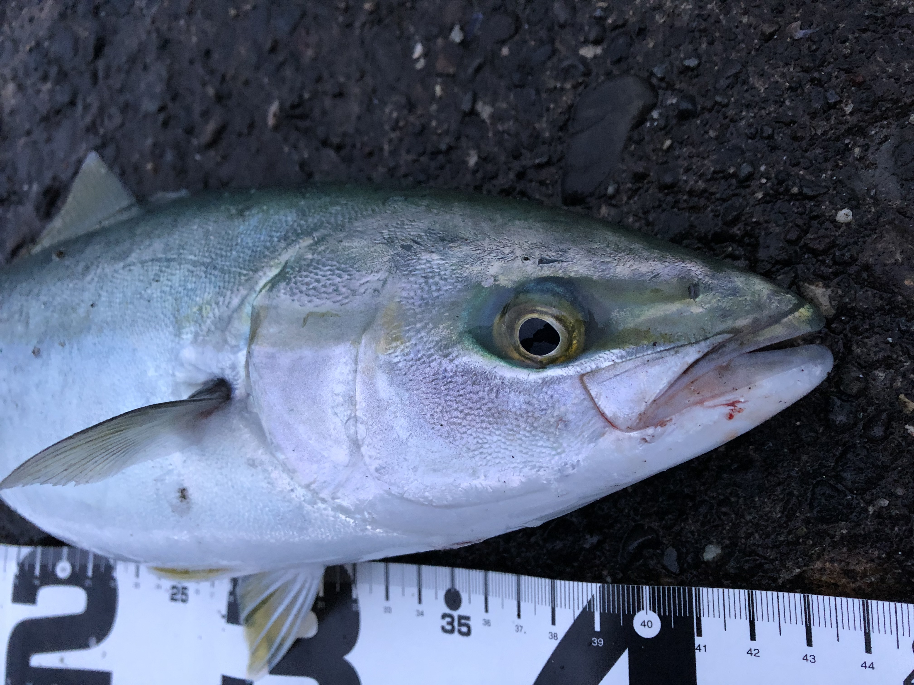

自己紹介
自分の名前： 佐藤憲汰出身地： 盛岡市好摩
出身校： 盛岡中央高等学校Bコース
趣味は、釣りと半年前に始めたキックボクシング・筋トレです。

私は家族で毎シーズンに何度も海へキャンプや釣り、海水浴をしに行くほど好きでした。 そして、去年から自分も自動車の運転が可能になり1人で出かける事が出増え、更に没頭していきました。
今まではアジやサバなど全国に比べ東北では比較的に小さな魚体の物を主にサビキやイソメで釣っていましたが、 始めてルアーに挑戦したその日に、子供サイズでしたが青物を釣ることができその日以来ハマってしまいました。 夏は毎週土日に釣りに出かけていました。まだまだ下手なのでルアーフィッシングで釣れない日も多々ありましたが、 私は海を見てる時間やルアーを投げているだけでも楽しむことができるのでとても有意義な時間を過ごせていました。 それに餌釣りではソイやアイナメ、その他色んな魚種を釣ることができたのでどんどん意欲が湧いてきました。 東北では青森・秋田・岩手・山形・宮城には行きましたが、それぞれに特性があり魅力がありました。
ぜひ、趣味として釣りを始めることをおすすめします！ こちらは釣りを始めたい方へお得なセットです！
私は家族で毎シーズンに何度も海へキャンプや釣り、海水浴をしに行くほど好きでした。 そして、去年から自分も自動車の運転が可能になり1人で出かける事が出増え、更に没頭していきました。
今まではアジやサバなど全国に比べ東北では比較的に小さな魚体の物を主にサビキやイソメで釣っていましたが、 始めてルアーに挑戦したその日に、子供サイズでしたが青物を釣ることができその日以来ハマってしまいました。 夏は毎週土日に釣りに出かけていました。まだまだ下手なのでルアーフィッシングで釣れない日も多々ありましたが、 私は海を見てる時間やルアーを投げているだけでも楽しむことができるのでとても有意義な時間を過ごせていました。 それに餌釣りではソイやアイナメ、その他色んな魚種を釣ることができたのでどんどん意欲が湧いてきました。 東北では青森・秋田・岩手・山形・宮城には行きましたが、それぞれに特性があり魅力がありました。
ぜひ、趣味として釣りを始めることをおすすめします！ こちらは釣りを始めたい方へお得なセットです！

もう一つの趣味として去年の十一月の下旬からジムに通い始め、キックボクシングを始めました。 始めたきっかけは高校三年生の時と比べ、運動する機会が減りおなかが出始めたのを恥ずかしく思い痩せようと思ったからです。 盛岡でジムを探したときに「astrame gym」さんを見つけキックボクシングに興味を持ちました。格闘技に対して、怖いイメージを する人がたまにいますが、私は部活で柔道をやっていたので全く感じませんでした。 私が通っているジムでは、スパーリングは無く運動をしたい人が多く集まってきます。 私が通うコースの内容としては、トレーナーが会員さんの鍛えたい体の部分を聞き適切な筋トレ方法を教えてくださいます。大体20分から30分くらいです。 次はサンドバックを3分間打ち続けます。鏡があるので、フォームをチェックしたりしながら個人で行っていきます。 それが終わると最後に会長さんとトレーナーさんにミッドを持ってもらい、ミッド内をします。指示通りに、ストレート・フック・ジャブ キックボクシングで重要なミドルキック・ハイキック・ローキックを中心にやっていきます。この時間が一番気持ちいいです。 激しく動くキックボクシングと、ヒートや新陳代謝を上げるダイエットに通じるメニューをトレーナーが教えていただけるので 同時に強くなりながら、綺麗な体格を作り上げていくことができます。